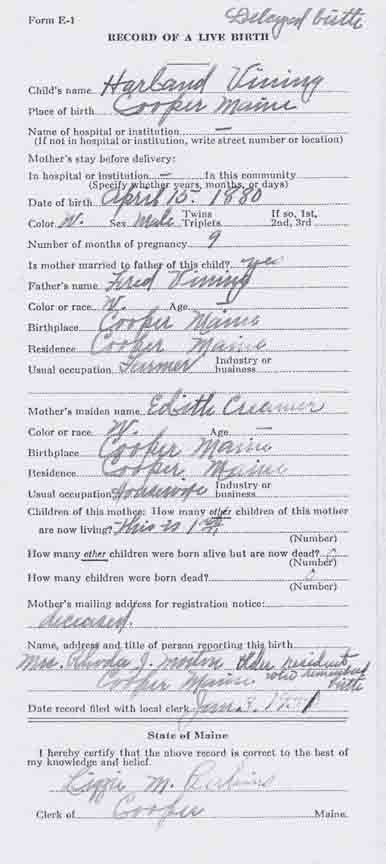
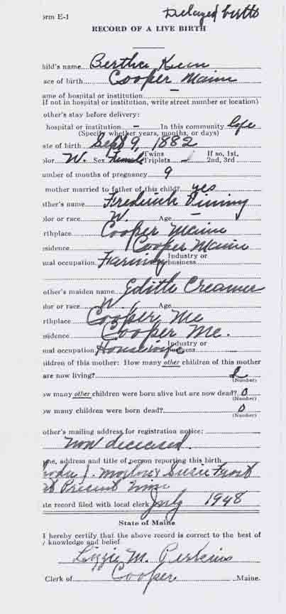
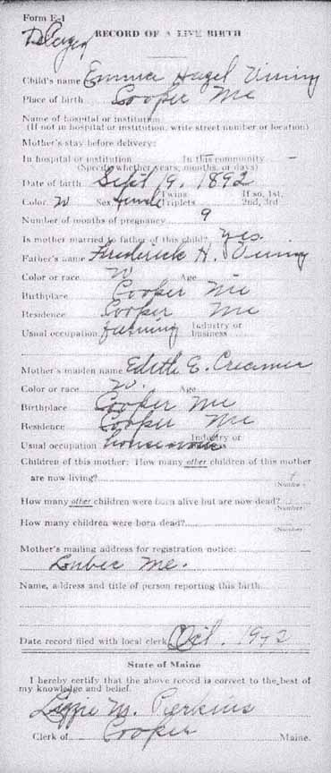

Documentation for Frederick H. Vining - Edith Eleanor Creamer
Birth Data
Birth records for Otis Harland Vining, Bertha Vining, and Emma Hazel Vining, children of Frederick H. Vining and Edith Eleanor (Creamer) Vining (from Maine State Archives):


